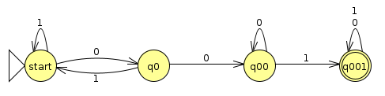
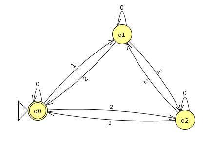
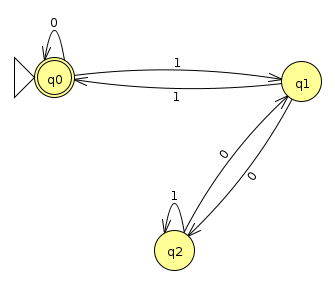

Week 2: Formal Descriptions of DFAs 🎩
Chris Tralie
Today we discussed formal descriptions of DFAs. What we learned is that a DFA can be described as a "5-tuple" (Q, Σ, δ, q, F). The meaning of each of these terms is as follows
- Q: A set of all of the states in the DFA
- Σ: A set of all characters in the alphabet
- δ: A function describing the arrows in the diagram
- q: The start state
- F: A set of the accept states or "final states"
Note that the start state q is a single element, because we can only have one start state, and the accept states are actually in a set because there can be multiple of them
Example 1
It's easiest to see what these are with an example. Let's consider the following DFA that accepts all binary strings containing 001 (Click here for the JFLAP file)
Below is a table showing the definition of the 5-tuple for this DFA
Q | {start, q0, q00, q01} | |||||||||||||||
Σ | {0, 1} | |||||||||||||||
δ |
|
|||||||||||||||
q |
start |
|||||||||||||||
F |
{q001} |
Note that while it's convenient to define δ as a table, we will sometimes hone in on particular inputs of the function with the notation δ(state, symbol). For instance, δ(q00, 1) = q001 in this example
Example 2
In this example, we'll go the other way around; that is, given a 5-tuple, we'll create a state diagram that realizes it visually. The 5-tuple is as follows
Q | {q0, q1, q2} | ||||||||||||||||
Σ | {0, 1, 2} | ||||||||||||||||
δ |
|
||||||||||||||||
q |
q0 |
||||||||||||||||
F |
{q0} |
Below is the picture we came up with in class for this (Click here to download the JFLAP file)
Notice how there are actually three arrows coming out of each state since there are three symbols in the alphabet Σ. As for an interpretation of this machine, the one I had in mind was that it would accept a string of 0s, 1s, and 2s whose sum was divisible by 3 (i.e. had a zero remainder).
Optional Aside: Interestingly, in class, Kevin noticed that this is equivalent to the condition that the number of 1s and the number of 2s is equal mod 3 (i.e. the remainder of the number of 1s is equal to the remainder of the number of 2s when divided by 3). To see why this is, let's write the sum of our numbers as 1a + 2b where a is the number of 1s and b is the number of 2s. If this is evenly divisible by 3, then we're saying that \[ a + 2b \text{ mod3} = 0 \text{ mod3}\] we can then rewrite this as \[ a \text{ mod3} = -2b \text{ mod3} \] One interesting rule from modular arithmetic is that \[ xy \text{ mod n} = (x \text{ mod n}) (y \text{ mod n}) \text{ mod n} \]
In particular, what this means is that
\[ -2b \text{ mod3} = (-2 \text{ mod3})(b \text{ mod3}) \text{ mod3} \]And actually, -2 mod 3 is simply 1, so we conclude that
\[ a \text{ mod3} = -2b \text{ mod3} = b \text{ mod3} \]Example 3
So why the big deal about this formal notation? Well, it makes it easier for us to specify more huge machines or more general classes machines more succinctly and without having to draw them. Let's consider an example of a machine that accepts a binary string with at most K zeros, where K here is left open as a variable. We couldn't draw this as a picture in general (unless we wanted to draw infinitely many pictures for each case). But we can describe it symbolically:
Q | {q0, q1, q2, ..., qK, qK+1} |
Σ | {0, 1} |
δ |
We'll split this definition into two cases:
|
q |
q0 |
F |
{q0} |
Formal Languages
We now have the terminology we need to formally define what is meant by a regular language. We'll need a few other definitions first
For instance, the set of all binary strings ending in 1 is a language over the alphabet Σ = {0, 1}.
- r0 = q
- δ(ri, wi+1) = ri+1
- rn is in F
Notice how there is one more element in the accepting sequence than there is in the string. This is because we start at the start state before we process any characters.
As a sanity for the notation, it's sometimes helpful to look through an example and plug in some numbers. If we look back at example 2 and we're given the string 112122, then we can give the sequence q0, q1, q2, q1, q2, q1, q0, and the 3 conditions above will be satisfied.
\[ L = \{s | M \text{ accepts } s\} \]
We're now finally ready to define a regular language
At this point, you may wonder if all languages are regular. Certainly if we can design a DFA, then it implies a language that is regular, so that encompasses everything we've looked at in this class so far. However, there are certain languages that are not regular. For instance, the language of all binary palindromes (e.g. 10111101, 10000001, 1101111011), is not regular. It seems like it would be tough to prove, because we'd somehow have to rule out infinitely many possible DFAs we could consider! But next week we will go over some tricks to show that certain proposed languages are not regular.
Binary Divisibility Checks
As some final helpful notes for you, you have a problem on your problem set about divisibility by 5 of binary numbers read from left to right. Let's complete the divisibility by 3 example to elucidate a strategy that can be used to design DFAs for general divisibility. This time I'll actually give the solution first and then I'll explain it. Below is a state diagram that accomplishes this in JFLAP (Click here to download the JFLAP file)
As a sanity check, we see that 3 (binary 11), 6 (binary 110), 9 (binary 1001), 12 (binary 1100), and 15 (binary 1111) are accepted. But how the heck do we come up with this?
First, we use the fact that all numbers have either a remainder of 0, 1, or 2 when divided by 3. We'll make a state for each of these possibilities and move between them as we get more information. If we stop at the remainder 0 state, then we accept, since that implies it's evenly divisible by 3
Now, to come up with the transitions, we have to think about what happens when we get an addition bit of information from left to right. What this means is what we thought we had actually shifts over to the left by 1 place. A binary left shift is actually multiplication by 2, just like shifting the digits of an ordinary base 10 number to the left is like multiplying by 10. So we can use this fact to help us. For instance, if we had the string 111 and were in the divisible by 1 state, and then we got a new bit b, the string we now have would be 111b. Our new string is then 1110 + b. If b = 0, then we move to the divisible by 2 state. If b = 1, then we move to the divisible by 0 state.
To treat the state transitions in general, we consider the three cases
- If we currently have a remainder of 0, that means our number is 3k for some natural number k. We get a new bit b and shift to the left, which makes this 6k + b. 6k divides evenly by 3, so that part doesn't matter, and we are just left with b. So if b = 0, we stay with a remainder of 0, and if b = 1, we have a remainder of 1
- If we currently have a remainder of 1, that means our number is 3k + 1. We get a new bit b and shift this to the left, and it turns into 2(3k+1) + b = 6k + 2 + b. Again, the 6k part drops out, and we're just left with 2+b. We see then if b = 0, we move to be divisible by 2, and if b = 1, we move to be divisible by 0
- If we currently have a remainder of 2, that means our number is 3k + 2. We get a new bit b and shift this to the left, and it turns into 2(3k+2) + b = 6k + 4 + b. Again, the 6k part drops out, and we're just left with 4+b, which we can remove a factor of 3 from to get 1 + b. We see then if b = 0, we move to be divisible by 1, and if b = 1, we stay divisible by 2.